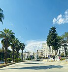
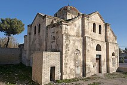
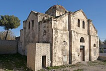

GAZİANTEP NİZİP İLÇESİ
Nizip, Gaziantep'e bağlı ilçedir. Gaziantep ilinin en büyük ilçesidir. Nizip ilçesinde tarım ve tarıma dayalı sanayi oldukça gelişmiştir. Orta Fırat Bölümünde bulunur. İklim olarak Akdeniz ve karasal iklim özellikleri arasında geçiş bölgesinde yer alır. İlçede Narenciye, Zeytin, Palmiye vb. Akdeniz Bitkileri rahatlıkla Yetişmektedir. Yazları Sıcak Ve Kurak Kışları serin Ve Yağışlıdır. Don ve kar olayları nadir yaşanmaktadır. Antep fıstığı ve Zeytin bahçeleri yaygındır. Bu bahçelerden toplanan Antepfıstığı ve Zeytin Meyveleri işlenmeden piyasaya sürülemez. Bunları işleyecek 100'den fazla orta ölçekli fabrika ve işletme mevcuttur. Karasal iklimde yetişen zeytinlerin aroması ve kokusu çok yoğundur. Nizip ilçesinde toplanan zeytinlerin kendine özgü aroması vardır. Bu zeytinyağından elde edilen sabunları meşhurdur. 1960'lı yıllarda Türkiye'nin Sabun ihtiyacının %90'ı Nizip ilçesindeki Sabun Fabrikalarında üretilmekteydi. Zeugma, diğer adıyla Belkıs harabeleri ilçeye 8 km uzaklıktadır.
 .jpg) 

İLETİŞİM
ADRES:GAZİANTEP
TELEFON:0123456789